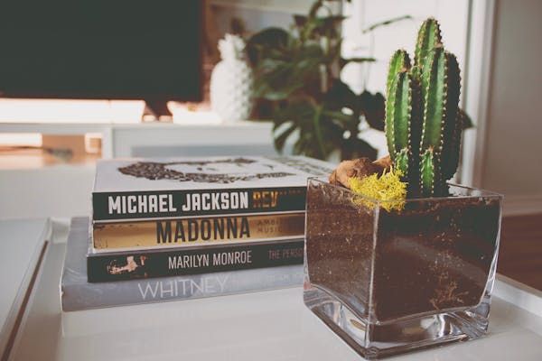

Finding simplicity in life
july 23, 2019 | 3 comments
Life can get complicated really quickly, but it doesn't have to be! There are many
ways to simplyfy yours life, a few of which we have explored in past. This week we
are taking a bit of a approach though in how you can find simplicity in your life
you already living.
CONTINUE READING
Keep cooking simple
Food is very important part of everyone's life. If you want to be healthy, you
have to eat healthy. One of the easiest way to do that is to keep your cooking nice
and simple.
CONTINUE READING

july 19, 2019 | 5 comments
Simplicity and work
Work is often major source of stress. People get frustrated and ruin their
relations with other and leads to burnout. by keeping your work life as simple
as possible. It will keep balance everything out.
CONTINUE READING

23 aug, 2019 | 2 comments
Simple Decoration
Home is not a home untill you decorated a little. People either dont decorate or they
go overbound and it doesn't have the impact they were hoping for. Staying simple will help
draw the eyes where you want it to and make things pop like never before.
CONTINUE READING

11 aug, 2019 | 4 comments